Market Makers, Volatility & the Greeks
How options market makers price and hedge risk — and how understanding their view lets a fundamentally-positioned trader exploit them.
70-80% of options expire worthless and ~80% of retail options traders lose money. The market maker on the other side isn't betting on direction — he's betting on realized volatility, selling optionality and delta-hedging. Learn how he thinks and you stop being the one who gets marked in the face.
The gist
- 70%-80% of options expire worthless and out of the money, and approximately 80% of retail options traders lose money — usually because they punt options as cheap leverage on a low-quality technical or bad fundamental idea, with no catalyst and no read on volatility.
- An options market maker is paid to take risk and provide liquidity; he is NOT betting on the stock's direction — he bets on the REALIZED volatility of the stock over the life of the option, then delta-hedges by trading the underlying.
- Volatility comes in two flavours: realized (a measure of the stock's historical movement) and implied (a measure of expected future movement). Implied vol is the ONLY unknown in options pricing — everything else is a known input.
- Black-Scholes has 6 inputs: 5 are non-debatable knowns (Spot Price, Strike Price, Risk-Free Rate, Days to Maturity, Dividends) and 1 is debatable — Implied Volatility. Worked example: spot 127.77, strike 130, risk-free 25 bps, 37 days, expiry 21-Oct-2016, no dividends. At 15% vol the model gives a $1.51 call and $3.71 put; if the observed call is $2.30, back out an implied vol of ~20.06%.
- Delta = how much the premium changes per $1 move in the stock: calls between 0 and 1, puts between 0 and -1, at-the-money ≈ ±0.5. Delta also approximates the probability an option finishes in the money (a linear relationship — a 10-delta call has roughly a 10% chance, not 70%).
- To hedge, a market maker short a call BUYS stock; short a put SELLS stock. Gamma is the rate of change of delta, so as the underlying moves the hedge must be re-balanced daily — big moves force aggressive hedging, which can cause even bigger moves.
- After hedging, the market maker is SHORT gamma / short volatility and 'rooting for nothing to happen'; the speculator is LONG gamma / long volatility and wants a big, quick move — 'you want to be dead right or dead wrong,' because a little right or a little wrong loses money in options.
- Market makers RAISE implied vol into catalysts (earnings, M&A, litigation, Fed) or rising realized vol; they LOWER it when catalysts pass or realized vol falls — often fooling retail into thinking options are 'cheap.' Low does NOT mean cheap and high does NOT mean expensive; it's usually the opposite.
- Concentrated open interest plus thin average daily volume can create a liquidity gap you can exploit — but only alongside an existing fundamental view. RCL example: Hist Vol 24.66%; $130 calls OI 9,340 (ITM), $135 calls OI 8,677 (OTM), zero OI between; hedging 9,340×100×0.5 = 467,000 shares vs ADV ≈ 1.4M (~35% of ADV). A $135 call ≈ $1.90 vs a $135/$140 bull call spread ≈ $1.20 → risk $1.20 to make $3.80 (~1:3.2 R/R).
- Never scour options chains for trade ideas — that's lazy and undisciplined. Fundamental analysis drives every idea; options are used only when there is a genuine marginal benefit over being long or short the stock outright.
The retail trader mandate: why most lose
- 70%-80% of options expire worthless and OTM; approximately 80% of retail options traders lose money.
- Retail generally has no idea how options work and just punts them as leverage on a long/short idea from low-quality technicals or bad fundamentals.
- They trade an option before doing fundamental research, ignore upcoming catalysts, and don't grasp that they must be right by the time of expiration.
- They claim volatility is 'cheap' or 'expensive' with no idea how it is calculated, and get pushed around by market makers — especially in small/mid-cap, low-volume stocks.
This is the setup for the whole video: the retail trader routinely loses because he treats options as a lottery ticket for leverage rather than a structuring tool. The market maker, by contrast, is disciplined about volatility — so understanding him is the antidote.
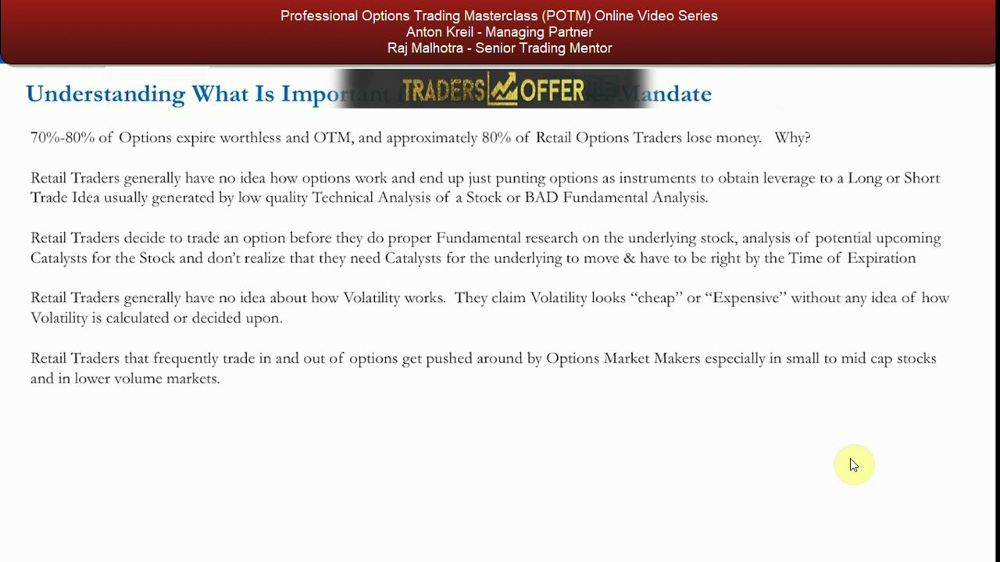
What a profitable retail trader actually does
- Generate good trade ideas first: obtain a fundamental predisposition of long/short direction.
- Then structure the trade effectively, considering catalysts and timing.
- Only take an options position if there is a marginal benefit over just being long or short the stock.
The order is non-negotiable — fundamentals and catalysts come first, the option is chosen last and only if it adds something. This principle bookends the video and returns in every conclusion.
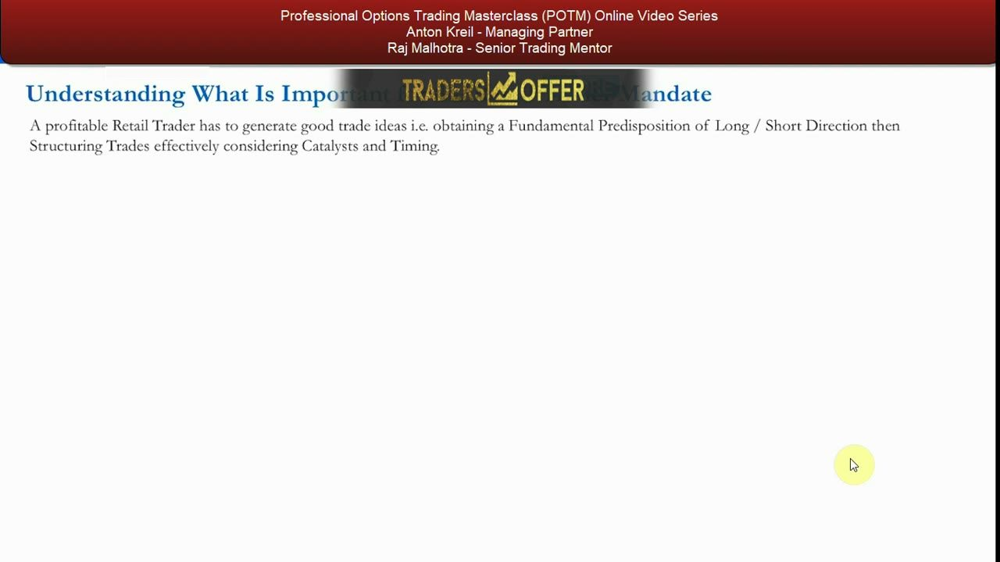
What is an options market maker?
- A professional trader paid to take risk and provide liquidity so institutions (pension funds, hedge funds, banks, prop desks) and retail can enter and exit trades.
- A smart market maker can make money even when you make money on the opposite trade — 'you both can make money.'
- Risk is NOT one-dimensional for a market maker the way it is for a directional speculator.
The person behind the curtain isn't the Wizard of Oz or Batman — he's a liquidity provider whose profit comes from how he trades his deltas and other options, not from you being wrong.
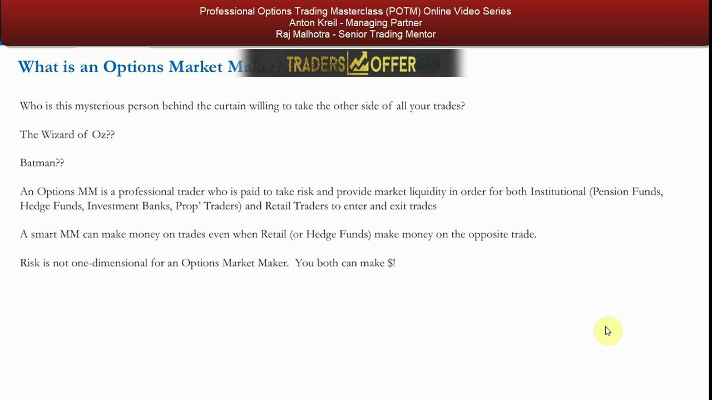
The market maker's book: bids and offers everywhere
- Market makers are the firms behind all the two-way prices (bids and offers) across every options chain — here, hundreds of Facebook strikes and maturities.
- Listed options have exchange-set strikes and maturities; over-the-counter options are privately negotiated (banks with large hedge funds/corporates) and irrelevant to retail.
- Speculators like you use options to bet on direction and for leverage, and to limit downside — but often lose because they don't know what they're doing.
A live Facebook chain shows the market maker quoting across the entire surface. He runs a long/short portfolio of options across strikes, maturities and even underlyings — a book, not a bet.
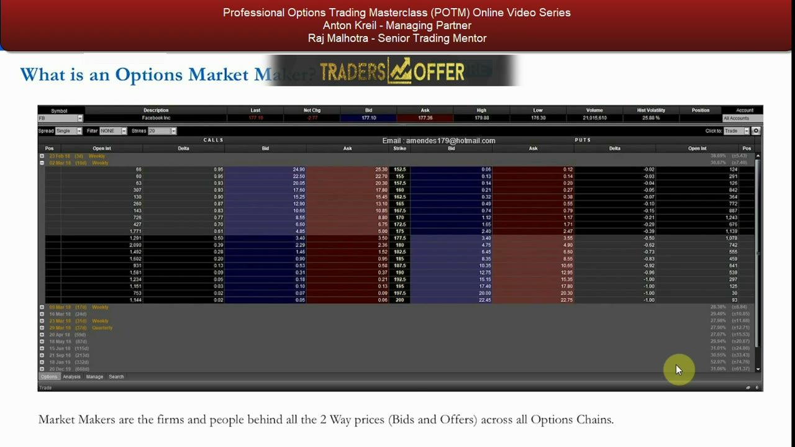
How market makers think: realized volatility, not direction
- Market makers do NOT bet on the direction of the underlying's move.
- They bet on the realized volatility of the stock over a specified time period (to expiration).
- They trade the underlying to hedge their option positions (delta), and hedge those deltas at the end of every day.
- Their 'negative selection portfolio' is a mix of long and short options based on expected future volatility, plus long/short stock depending on the option position.
This is the mental switch: the market maker's edge is volatility, not fundamentals. Bottom line — he cares about volatility rather than the underlying fundamentals of the stock.
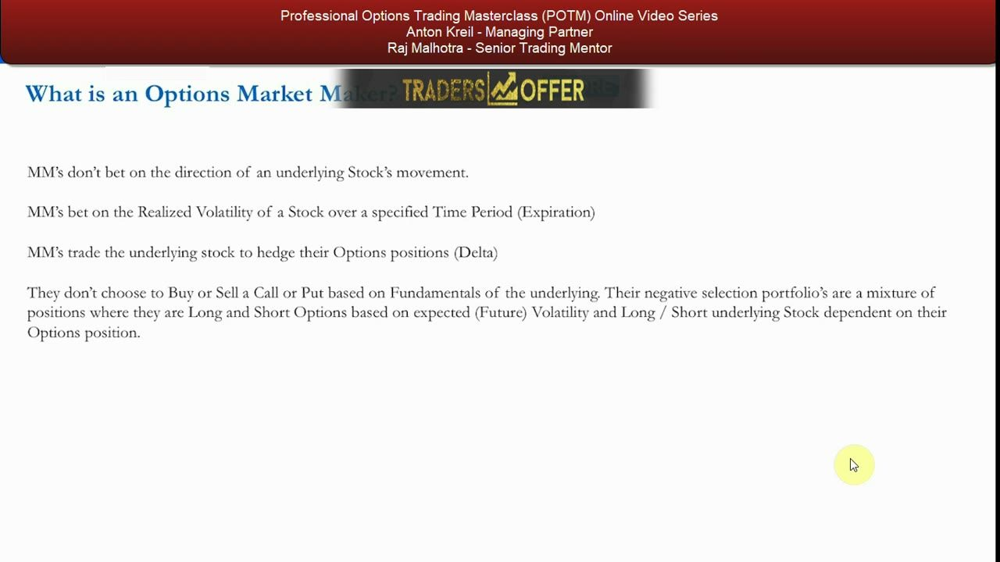
What volatility actually is
- Realized volatility measures a stock's historical movements.
- Implied volatility measures a stock's expected future movements.
- Implied vol is used to calculate the option premium and is the only unknown in options pricing — all other factors are known.
- Understanding WHY volatility rises and falls is the single most important thing for the retail trader.
You can't judge whether an option is fairly priced without knowing which of these two you're looking at. The next section shows exactly where implied vol sits inside the pricing model.
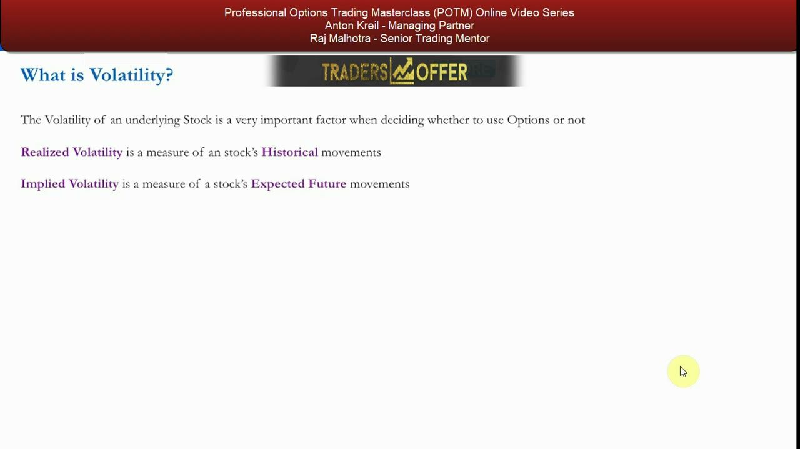
Black-Scholes: 5 knowns and 1 debatable input
- Black-Scholes has 6 inputs. Five are non-debatable knowns: Spot Price, Strike Price, Risk-Free Interest Rate, Days to Maturity, Dividends.
- All market makers and traders agree on those five because they are simply inputs.
- The ONLY input with any disagreement is Implied Volatility — the level market makers constantly monitor as conditions, stock-specific events and their own positioning change.
- Worked example: spot 127.77, strike 130, risk-free 25 bps (two-month LIBOR), 37 days, expiry 21-Oct-2016, no dividends. At 15% vol → call $1.51, put $3.71. If the market shows the call at $2.30, trial-and-error backs out an implied vol of ≈ 20.06%.
- 'Backing out' implied vol from the observed price is exactly how you translate a market price into the volatility the market is charging you.
Because five inputs are agreed and one is not, the entire negotiation between market maker and trader is a fight over implied volatility. The worked example shows both directions: plug in vol to get a price, or back a price out to get the implied vol.
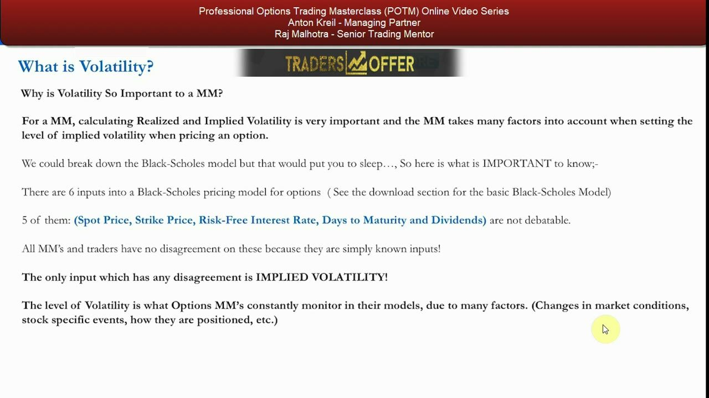
Why market makers RAISE implied vol
- There are market-moving catalysts before expiration — earnings, M&A, litigation, drug-trial results, Fed decisions, crash fear, black-swan events.
- Or realized volatility goes up, which pulls implied vol higher.
- Or the market maker is short so many options he is forced to raise implied vols (being financially prudent).
- Best time to own options is around catalyst-driven events: asymmetric payoff if you're right, and because a catalyst exists your odds of being dead wrong are also higher than normal — so the option is protection.
When the market maker is short optionality, a big move in EITHER direction loses him money because of his hedges — which is precisely why he charges more vol into events.
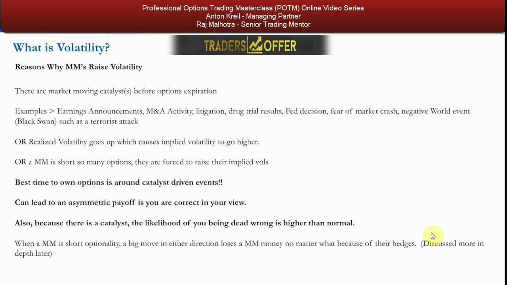
Why market makers LOWER implied vol — and the trap
- A catalyst passes without incident, or there's a lack of catalysts before expiration, or realized volatility falls.
- Or the market maker is too long options across his book and is forced to lower implied vols.
- Worst time to own options is when there are no catalysts — time decay kills you.
- Low prices (low implied vol) does NOT mean 'cheap' and high prices (high vol) does NOT mean 'expensive' — usually it's the opposite.
Market makers lower vol to fool retail into thinking options are cheap right before those options quietly decay to zero. 'Low ≠ cheap, high ≠ expensive' is the line to remember.
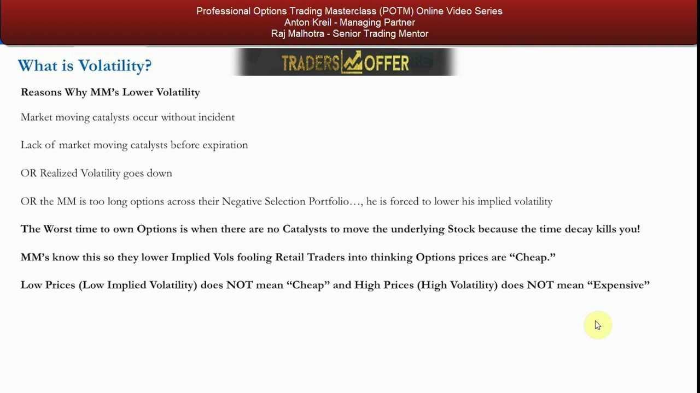
After the trade: the market maker hedges his delta
- Delta = the theoretical estimate of how much an option's premium changes given a $1 move in the underlying.
- Delta is between 0 and 1 for a call — if a market maker sells a call, he needs to BUY stock.
- Delta is between 0 and -1 for a put — if a market maker sells a put, he needs to SELL stock.
- Gamma is the rate of change of delta; the delta shifts as the underlying moves, as time to expiry decreases and as volatility changes, so the book must be hedged daily.
- Gamma isn't important for the retail trader to trade, but understanding it reveals how the market maker is forced to act — and where the opportunity is.
While the speculator sits at home hoping, the market maker's first move after selling an option is to neutralize the delta by trading stock — and to keep re-hedging as gamma moves the delta around.
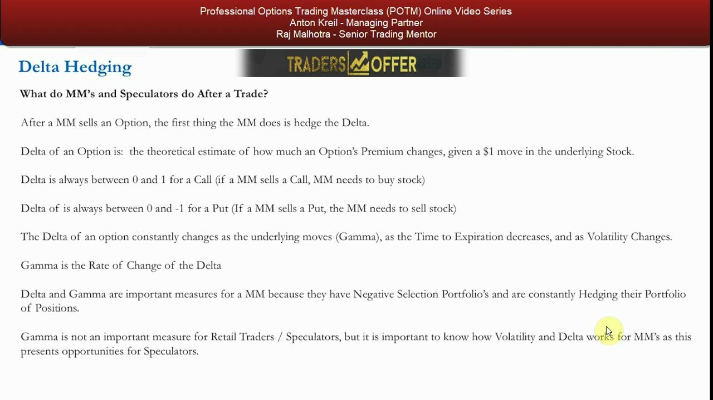
Delta-hedging example: XYZ at $20
- XYZ trades $20; the Oct-20 strike calls trade $1.00 with a 50 delta. You buy 200 of them.
- The market maker (now short 200 calls) buys 200 × 100 × 0.50 = 10,000 shares to be delta-hedged.
- If the stock rallies to 21 the delta rises and he has more stock to buy; if it falls to 19 the delta falls and he has stock to sell — that re-hedging is gamma.
- His best case is that NOTHING happens: he keeps the call premium and loses nothing on the hedge. He is 'short volatility'; a big move either way is bad for him.
The market maker roots for the stock to stay still. The speculator, long the call, is long volatility and wants a big, quick move — ideally up, but a big move down still beats owning stock outright because the loss is capped at the premium.
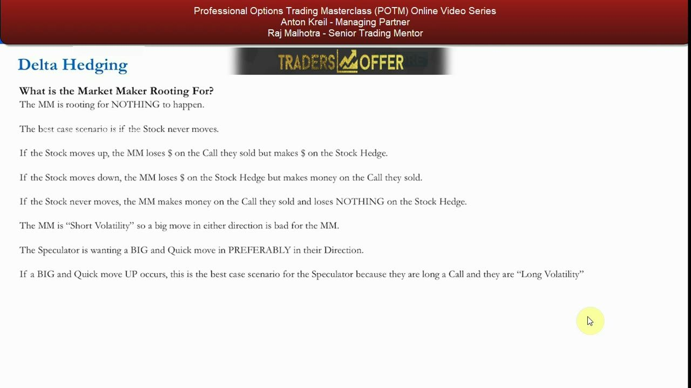
Second example: adding puts increases the market maker's risk
- Now a different speculator buys 400 of the Oct-19 strike puts at a 25 delta.
- To hedge, the market maker SELLS 400 × 100 × 0.25 = 10,000 shares — offloading all the stock he was holding.
- He is now short 200 Oct-20 calls AND short 400 Oct-19 puts, with no stock hedge on.
- This INCREASES his risk: having no stock is irrelevant — the stock was just a hedge; he is now short far more optionality, and a big move either way could exceed the premium he collected. Best case is the stock settling between $19 and $20.
The lesson: risk lives in the optionality, not the stock hedge. More options sold means more short volatility, so the market maker most wants the stock to go nowhere before maturity.
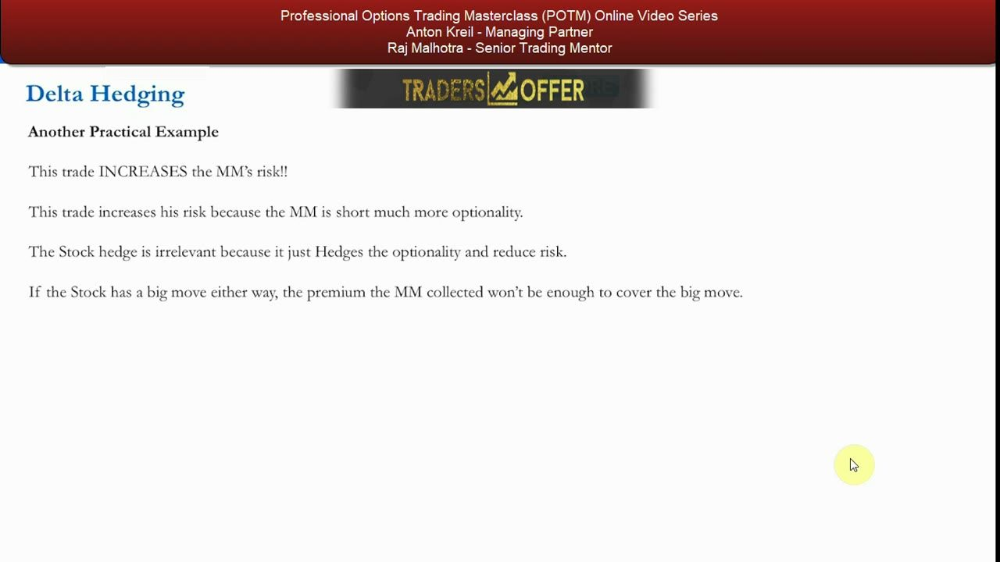
Open interest, liquidity gaps, and how it benefits you
- Market makers bet on realized volatility, not direction, and constantly hedge: short a call → buy stock as it rallies; short a put → sell stock as it falls.
- Open interest — the total number of contracts currently open (traded but not yet closed, exercised or assigned) — is publicly available for every strike and maturity.
- Unlike shares (fixed supply), an option trade can CREATE a new contract: buy-to-open/sell-to-open adds to OI; buy-to-close/sell-to-close reduces it; a matched open-vs-close leaves OI unchanged.
- Concentrated open interest can force market-maker hedging and create liquidity gaps you can exploit.
Because you can see where open interest is piled up, you can infer where the market maker will be forced to buy or sell stock — the raw material for a liquidity-gap trade.
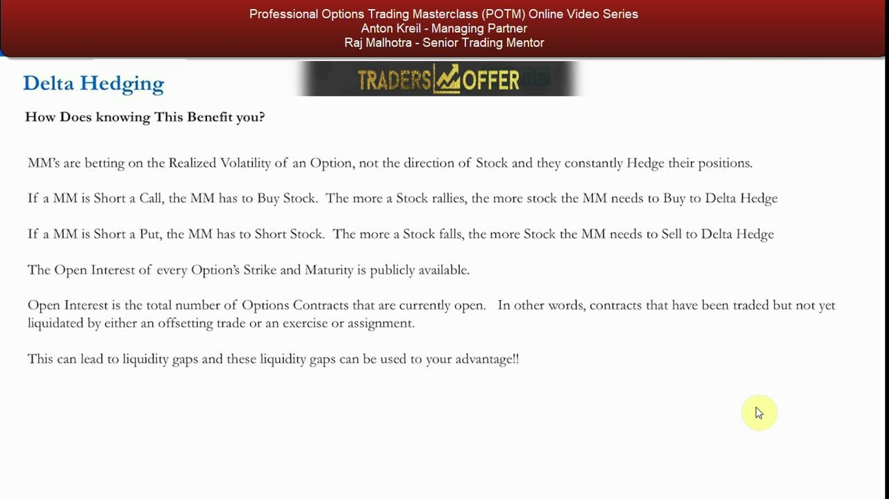
RCL case study: reading the open interest
- Royal Caribbean (RCL) near all-time highs, Hist Volatility 24.66%, after a sharp ~$10 sell-off.
- March-16th $130 calls are ITM with open interest of 9,340; $135 calls are OTM with open interest of 8,677; there is zero open interest on the strikes in between.
- Concentrated OI on two strikes with nothing between them is the signature of a potential liquidity gap.
- The stock has never traded at $135 — a big clue that speculators bought cheaply-priced calls in the sell-off (so market makers are most likely short those calls).
The chain tells a story: heavy call buying by speculators into the sell-off left market makers short calls, with two dense open-interest strikes and a vacuum between them.
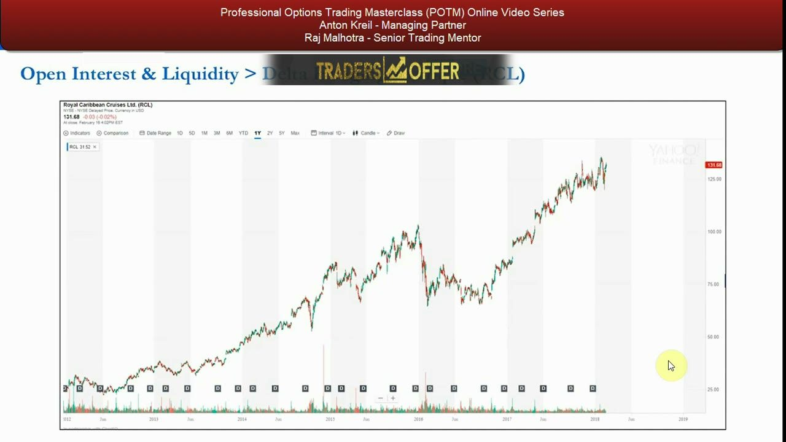
RCL: quantifying the forced hedging
- $130 calls are ITM with OI 9,340 → if market makers are all short, they had to buy 9,340 × 100 × 0.5 = 467,000 shares as the calls went through $130 (assuming ~0.5 ATM delta), with more to buy as it rises.
- RCL average daily volume ≈ 1,400,000 shares — so ~467,000 is about 35% of ADV; market makers are clearly a large part of the flow.
- If the stock rallies to $135 (0.5 delta assumption), they must buy up to 8,677 × 100 × 0.5 = 433,850 more shares.
- By contrast a stock like Facebook trades ~30M shares/day, so 467,000 shares would have no effect — the effect only exists because RCL's ADV is thin.
The math shows why the gap matters: forced market-maker buying equal to a third of daily volume can turn a push through $135 into a violent squeeze toward $140.
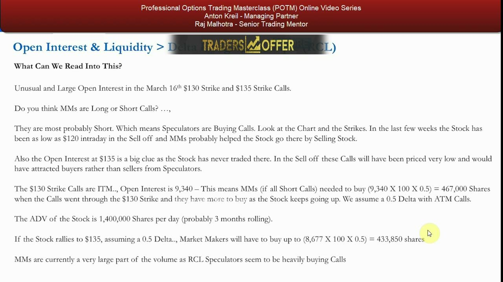
RCL: sizing the trade — only with a fundamental view
- IF you are already fundamentally long RCL and see this technical setup, a catalyst pushing through $135 could quickly gap the stock to $140.
- Volatility is probably priced high relative to the past (Chris Quill covers how to calculate it in the next 'break' video).
- Instead of buying stock you could buy the $135 call for $1.90, or the $135/$140 bull call spread for ($1.90 − $0.70) = $1.20 — risking $1.20 to make $3.80, ~1:3.2 risk/reward.
- Do NOT scour options chains to find trade ideas — you'd only look here because you already want a long position and are checking for marginal benefit; with no marginal benefit, just buy the stock.
The trade is real but strictly conditional: the fundamental predisposition comes first, the options structure is chosen only for the marginal benefit it adds over owning the shares.
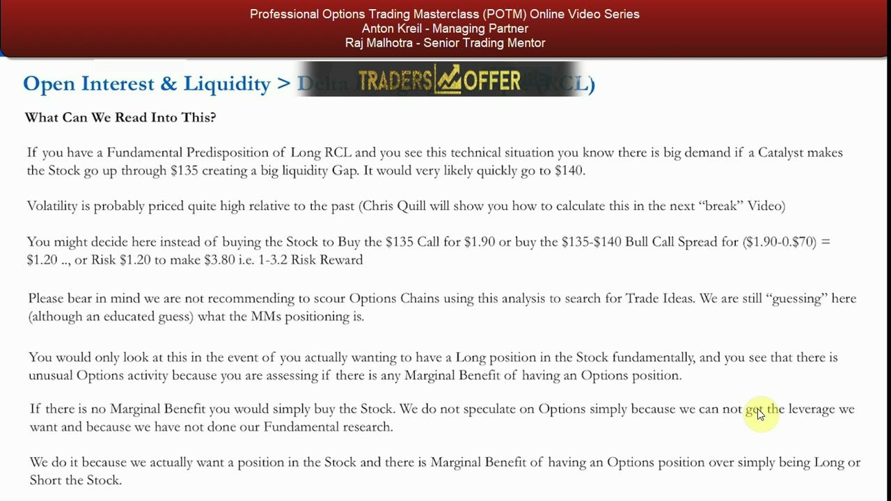
Delta formalized: reading probabilities off the delta
- Delta is how much an option's value should change per $1 rise in the underlying: calls 0 to 1, puts 0 to -1, ATM ≈ ±0.5.
- The more in-the-money a call, the higher its delta (a 15 strike call with the stock at $30 has ~1.00 delta); the more out-of-the-money, the lower.
- Delta approximately equals the probability the option finishes in the money — a deep-ITM option ≈ 0.99, a far-OTM option ≈ 0, an ATM option ≈ 0.50 (a coin flip).
- The relationship is linear — don't call a 10-delta call a '70% chance' of finishing ITM.
Delta does double duty: it's both the hedge ratio the market maker needs and a quick, if imperfect, probability the trade lands in the money.
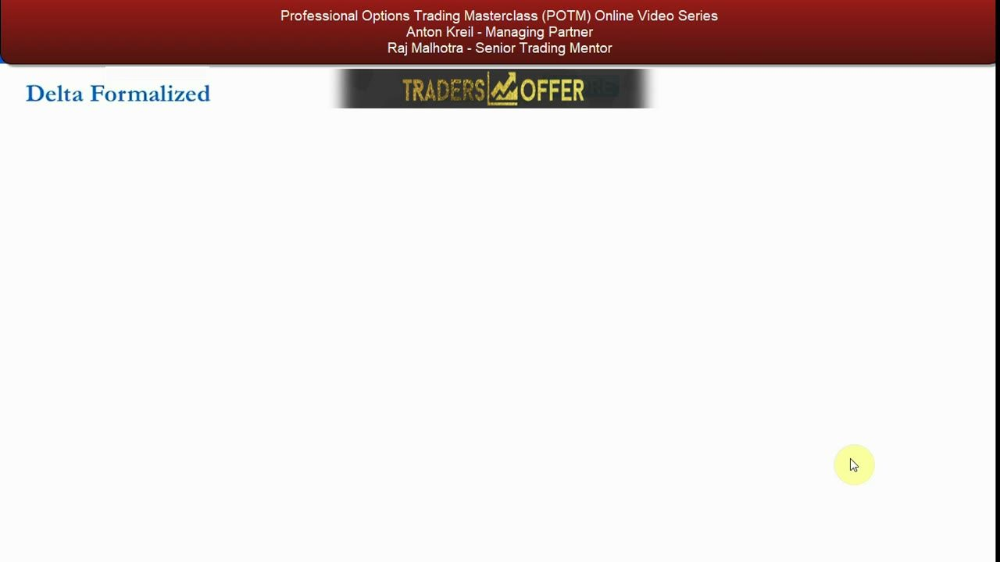
Conclusions
- As long as an option is fairly priced given its implied vol, the trade may be worth doing in options rather than stock — but the PTM fundamental analysis still drives every idea.
- Get ideas from research, then MAYBE use options to implement the view, never the reverse — and only if there's marginal benefit.
- Don't assume you know more than the market maker on catalysts; there's usually a reason the market isn't pricing in what you see.
- Market makers bet on realized volatility, not direction, and can mark options up or down into events to manage their book — so go in assuming you could lose the whole premium and be comfortable with that.
- Big moves cause bigger moves because market makers must hedge aggressively; knowing their positioning can create liquidity gaps you can exploit. Don't be afraid to be greedy — they have no problem ripping you off, so take no prisoners.
The closing loop returns to the opening principle: fundamentals and catalysts first, volatility discipline always, options only for genuine marginal benefit — and never trade at the mercy of the market maker's marks.
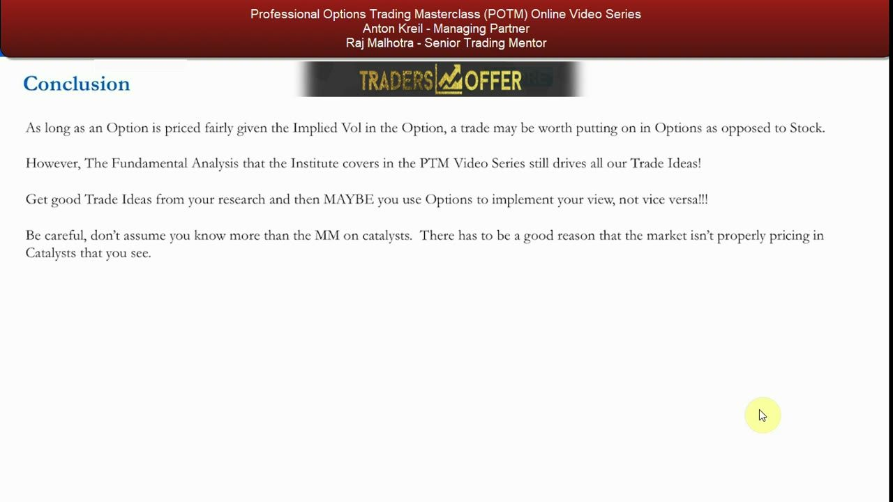
Glossary
- Options Market MakerA professional trader paid to take risk and provide two-way liquidity across an options chain; profits from volatility (realized vs implied) and delta-hedging, not from directional bets.
- Realized VolatilityA measure of a stock's actual historical price movement over a period.
- Implied VolatilityThe market's expectation of future movement embedded in an option's price; the only unknown/debatable Black-Scholes input, used to compute the premium.
- Black-Scholes inputsThe 6 inputs to the option pricing model: Spot Price, Strike Price, Risk-Free Rate, Days to Maturity, Dividends (all known) and Implied Volatility (the only debatable one).
- DeltaThe theoretical change in an option's premium per $1 move in the underlying: 0 to 1 for calls, 0 to -1 for puts, about ±0.5 at the money. Also approximates the probability of finishing in the money.
- GammaThe rate of change of delta as the underlying moves (also with time and volatility); forces the market maker to re-hedge continually.
- Delta hedgingNeutralizing an option's directional exposure by trading the underlying — buy stock when short a call, sell stock when short a put — and re-balancing as delta shifts.
- Short volatility / short gammaThe market maker's post-hedge state after selling options: he profits if the stock stays still and loses on a big move in either direction ('rooting for nothing to happen').
- Long volatility / long gammaThe speculator's state when long options: he profits from a big, quick move in either direction — 'dead right or dead wrong.'
- Open Interest (OI)The total number of option contracts currently open (traded but not yet closed, exercised or assigned); a new contract can be created when a trade is placed.
- Liquidity gapA situation where concentrated open interest and thin average daily volume force market-maker hedging that can amplify a move — exploitable only with a pre-existing fundamental view.
- Marginal benefitThe additional edge an options structure offers over simply being long or short the stock; the only justification for trading options rather than shares.
- Bull call spreadBuying a call and selling a higher-strike call (e.g. RCL $135/$140 for $1.20) to cap cost and define a favorable risk/reward, here ~1:3.2.